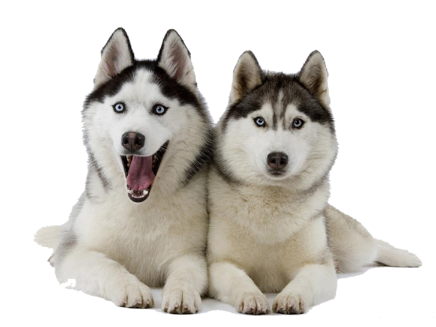

В ходе охоты эти собаки полагаются, скорее, на зрение, а не на чутье. Они обожают бегать и могут продемонстрировать спринтерские пробежки с невероятной скоростью, оставляя хозяина далеко позади! В помещении они часто ведут себя как расслабленные домоседы. Однако на открытом воздухе они находятся в постоянном поиске объектов для преследования. Часто собаки кажутся глухим к командам своего хозяина, если уже началась погоня. Им нравятся прогулки на поводке. Они рады бывать на свежем воздухе, хотя могут проявлять агрессию по отношению к незнакомыми кошкам и другим мелким пушистым существам. Они спокойны, хотя редко открыто проявляют свою любовь к людям. Обычно они хорошо ладят с другими собаками.